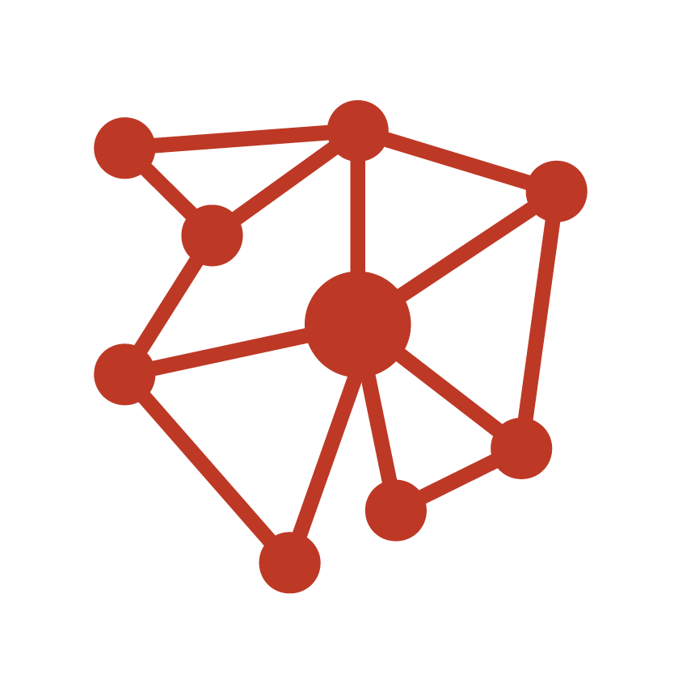
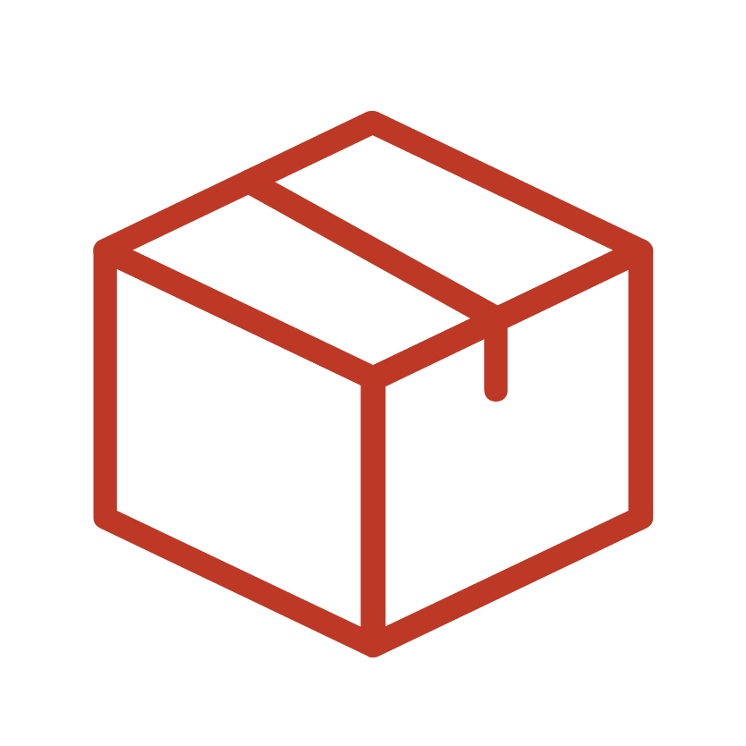
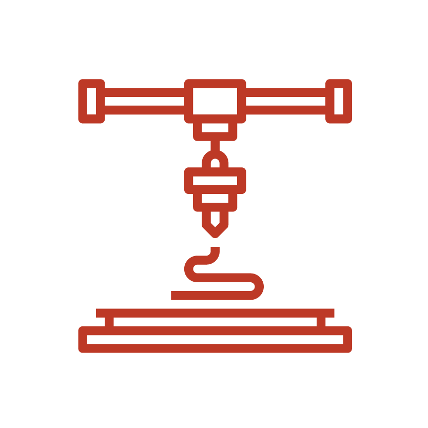

Luigi Marchionni
Technology enthusiast
About Me
Welcome, stranger.
My name is Luigi, i'm an interaction designer.
I studied in 2018 in industrial product design, then i followed a master degree in Interaction design.
I love to investigate and learn technologies that could improve the space in wich we all live in a meaningful, interesting and funny way; like
mixed reality, machine learning, computer vision or 3D printing.
My purpose is to collaborate, one day, in the design team
of a device that only exists in sci-fi movies.
Background
Skills
I am a...
Interaction designer

My main area of interest is user interface and user experience design. My master degree project, Godspeed was an
experiment for building an artificial environment, connecting real spaces, users and technological devices, using immersive interfaces as a medium. I also took part in a
workshop organized by technogym, with the Aim of designing a solution for the interface of a virtual assistant.
Motion designer
I have some knowledge of filmmaking, animation and 3D graphics, which have helped me a lot during the realization of the works of my
training path, both in project features and in communication. I can use Adobe Suite softwares like After Effects, Premiere, Illustrator, Indesign,
Photoshop and Audition. I also worked as a graphic designer for Max Studio and AEK srl.
Product designer

In my formation, i tried to involve my passion for science, studying the consequences of choosing a material in the creation of a
design product. my first thesis project, Triskel, was an attempt to innovate wheels for electric cars, by studying its physics. I participated in a merchandising project
called Tabula, for which a new process was invented involving the laboratory of the engineering school lab. I also participated in a workshop within the Basel school of design,
organized by Vitra, to research new materials for design.
Digital art Geek
Coding is my main interest. I know languages like HTML, CSS, JavaScript or C#, and i can use frameworks like Three.js,
Processing and P5. I'm interested in mixed and virtual reality technologies, and i realized some digital environment experiments using Unity 3D.
Maker wannabe

I am proeficient in many prototyping tecniques, to simplify communication of ideas. I used softwares for 3D modeling like
Rhino, PTC CREO, Autodesk Alias and VRed, realizing renderings and projects in additive printing and CNC cutters. For device prototyping i use tools
like Arduino, and Adobe XD for interface prototypes.
Friendly teamworker
I enjoy working with other people, expecially if they experienced different fields. I think teamwork is a
slow process, but qualitatively productive and interesting. I think that communication is very important inside a working group, and prototyping is the key
feature for linking specialists in various fields, creating a non-complex dialogue between managers, artisans, designers, scientists, specialists and workers.
Projects


Adaptive and environmental interface design for augmented reality games. Humans and artifacts exchange information with their surroundings through various types of interfaces. My design proposal is to produce an interface in which the user can forget the device that allows him to play, through an immersive engagement method that allows the interaction between player, real environment and virtual simulation.
Godspeed is a survival game with management and action components. An application for mobile it allows to transform a domestic environment into the deck of a spaceship, allowing a group of people who are physically in the same place, to explore the cosmos and meet the crews of other spaceships, led by players who are located somewhere else part of the world.


Procedural virtual environment, created starting from environmental data and images obtained from the sentiment analisys of the users who visit a specific place.
Spherical images of the environment are merged with sentimental images through a machine learning algorithm, creating different planets each time.

Around our planet orbit about 130 million fragments from objects thrown by man in space; the space debris travels at speeds so great that it destroys everything along their path, endangering the communications on our planet.
Infographics site that uses 3D animations rendered in the browser, which show the proportions of the space junk phenomenon.


10 PRINT CHR$(205.5+RND(1)); : GOTO 10
This is a famous visual basic code string that allowed, in commodore 64, to create a generative pattern of mazes. These experiments reproduces the logic of this algorithm, with the tools of javascript, p5.js and openGL.
Try them!


The point of view from which we look at the world, from below, from above, with and without colors, influences our subjectivity and the type of person we are.
Beholder is a machine learning software that merges images from different cameras, and builds a 3D model based on the interpretation of the computer's subjective reality.

When energy encounters an obstacle, it forms a fractal pattern: this is why nature produces similar forms in lightning, in the roots of trees and in the human nervous system.
Merchandising for the Palazzo Poggi museum in Bologna, which hosts the exhibition by Luigi Galvani, who discovered that electricity and life are closely linked.
Set of trays decorated with electric marks, called Lichtenberg figures, produced by a powerful electric voltage.


Virtual assistants allow users to interact with automated systems of the environment, with interactions proper to human relationships.
In the artificial environment of the gym, Aim takes on a character that meets the personality of the user and his approach to training: to improve his physical performance, for wellness or for fun.


Rotating objects possess an intrinsic energy that is opposed to their circular movement. In particular, car wheel rims have a structural function, but they consume energy that could be used in the movement of the vehicle.
Triskel uses a system of solenoids and magnets that produces electricity, both in motion and during braking, which will then be fed back into the battery in order to increase the autonomy of the vehicle.
The chassis, inspired by the vehicles of Daniel Simon (Tron: Legacy, 2010) and Katsuhiro Otomo, (Akira, 1988) is that of a fairing wheel, one with the rest of the car.


Competition for the realization of the San Marino state pavilion for "EXPO 2020 DUBAI: Connecting minds, creating the future".
A peculiar feature of San Marino is the meteorological phenomenon for which the clouds fall below the level of the mountains, and it seems that the fortress floats above the mist: a strong metaphor for a nation that wants to enter the future through projects of energy independence.
An immersive room in which the sky of San Marino is projected in timelapse. The luminous bodies present are inflatable clouds that react with the surrounding environment, changing color, but also with the public, increasing their brightness in passing. The floor is covered with energy-efficient tiles, making the entire pavilion self-powered by visitors inside.